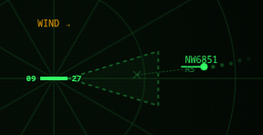
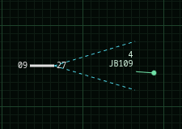

Demo write-up · Agentic coding
ATC: four agents, one blueprint, four different airports
We wrote the most complete requirements document we could stand to write, handed the same file to three coding agents, and then handed a four-sentence version to a fourth. Eli Whitney would have expected four identical rifles. We got four airports.
Bearzenker Labs · Agents: Antigravity V2 (Gemini), Claude Sonnet, Codex (GPT-5.6 Luna), Claude Fable 5 · Output: four playable browser games
Our last experiment, Conquest, ran a single agent through five Agile-shaped sprints and graded the paper trail. This one flips both variables. One agent becomes four. Five sprints become one drop of fully-specified requirements — waterfall, on purpose. The product is an air traffic control simulator: planes enter the edge of a radar scope, you vector them onto final approach, the tower takes it from there.
The game is not the point. The point is a question every engineering manager has quietly wondered about since these tools shipped: if the spec is complete enough, does it matter which agent builds it?
TL;DR
- Every agent met the requirements. Nobody shipped a butter knife when we asked for a spoon.
- Every agent produced a visibly different product anyway — different radar geometry, different chrome, different amount of invented feature.
- We planted a trap: a critical success factor deliberately left out of the spec, to see who would invent a feature to cover it. Nobody took the bait.
- The hardest bug of the whole experiment was a CSS overflow, not a flight-dynamics error. Think about what that means for the "you don't need developers anymore" pitch.
Why air traffic control
Conquest had a cheat built into it. Ask any model for a Risk-style conquest game and it already knows the shape of the answer — the board game is famous, the rules are documented in a thousand places, and copyright guardrails are the only thing standing between the prompt and a near-perfect replica. The model isn't inventing; it's recalling.
Air traffic control has no such cultural template. There is no mass-market ATC board game. There is literature about the job, but for most people the radar scope is an unknown realm, and only working pilots and controllers can judge whether a simulation feels right. That makes it an excellent test subject: almost everything on the screen has to be invented from the requirements rather than recalled from training data.
Waterfall, deliberately
Let us take a moment on methodology, because the word "waterfall" gets used as an insult and it shouldn't. Conquest was Agile-shaped: the goal was known, the features arrived incrementally, and each sprint got a review gate. ATC is the opposite. Everything went in up front — screen layout, block size, aircraft physics, command syntax, landing geometry, scoring — with the expectation of a fully functional MVP on first delivery. Additional prompts only if the thing wasn't fit for purpose.
Spec excerpt — flight dynamics
Aircraft default physics:
- speed of one block per turn
- change altitude at a rate of 2 Angels per turn
- turn at 30 degrees of heading per turn
The 800 pixel wide screen will have 80 blocks. An aircraft on heading 90
(due east) with a speed of 1 will cross the radar screen in 80 turns, but
an Air Force fighter with speed of 2 will cross in 40 turns.
That is about as unambiguous as prose gets. Pixels per block, degrees per turn, thousands of feet per turn. If specification precision alone were enough to make outputs converge, this is where it would show.
The standardized-parts hypothesis
Think back to Eli Whitney and interchangeable parts. Given exact blueprints, different factories should produce the same object. World War II proved it at scale — the Rock-Ola jukebox company built rifles. They had a factory. Jukeboxes are metal. Rifles are metal. Rock-Ola just needed the blueprints.
So: given a fully specified set of requirements, will different agents generate the same output? Fred Brooks answered this in 1986, before anyone was worried about AI, in No Silver Bullet. He separated the machine's physical nature from software's creative essence. Ask ten people to draw an elephant and you get ten drawings, because you asked for an abstraction, not a replica of something physical. Requirements describe non-physical outcomes. Every subroutine is a small act of invention.
The only blueprint precise enough to guarantee identical code is the code itself.
Rock-Ola's machinists had the skill to build a rifle from blueprints. They did not necessarily have the skill to invent the prototype. Developers — and now agents — have to do both, every time, at the level of the individual function. So our hypothesis going in was straightforward: the outputs will differ. The interesting question is how, and how well each one still meets the brief.
Two ways to fail
The obvious failure is under-delivery: you asked for a soup spoon and got a butter knife. Get a fork and you have a 90% solution — awkward, but recognizably in the family.
The second failure mode is the one people don't flag, because it sounds like generosity: over-delivery. Agents add features nobody asked for. Human teams chase shiny objects too, so this shouldn't surprise anyone. It's dangerous because you cannot easily tell how load-bearing the unrequested feature has become. If the agent's good idea quietly conflicts with your plan, removing it later can pull three other things down with it. Unrequested code is untested surface area you now own.
The altitude trap
One critical success factor was left out of the spec on purpose. Altitude is the whole game — you cannot land above 5,000 feet — but the requirements only ever describe altitude changing through typed chat commands (C7 to climb, D5 to descend). No slider. No buttons. Any product designer looking at that screen would want to add one.
Not one of the three agents built it. Every one of them honored the omission and left altitude on the keyboard. That is the single most reassuring result of the experiment: they read the spec as a boundary, not a suggestion.
The field
Three agents, one spec file, no design direction. Here is what came back.
Build 01 · Google Antigravity V2 (Gemini)
The over-achiever

A genuinely handsome interface: traditional green-on-black circular scope. It over-delivered immediately — pause and 2× speed controls nobody asked for — but its inventions were tasteful. A destination marker reminds you where each aircraft is heading, and clicking a plane arms it in the chat window, so you type D5 instead of the full flight number.
One bug: end of level reported a score of zero. A single diagnostic prompt found it — penalties for lost aircraft had pushed the first run negative, and the display rounded up. The fix was a per-condition score recap plus a final score allowed to go below zero. Worth noting the agent explained the cause before it changed anything.
Build 02 · Claude Sonnet
The literalist

Green-on-black again, but a square grid rather than a circular sweep, with blue information panels. No extra display chrome. Point-and-click, flight dynamics, and the command set all behave as written. No tweaks or bug fixes were requested at any point.
Its one addition is a good one: when the clock runs out, aircraft already on approach keep flying until they land, and only then does the level close with a final score. The reasoning is sound — those planes are under tower control, so the controller is no longer in the loop. It also slipped in real-world airline call signs instead of random letters, which is the kind of detail a person notices and a spec never asks for.
Build 03 · Codex (GPT-5.6 Luna)
Perfect logic, broken layout

Run on OpenAI's least powerful model in the family. From a requirements standpoint it was perfect out of the box — strict MVP adherence, nothing invented, nothing missing. Circular scope, rounded green panels.
Then the chat window overflowed its container and text disappeared behind the frame. A textbook CSS problem, and it took three rounds of conversation to talk the model through the fix. Sit with that for a second: the simulation math was flawless, and the thing that nearly sank the build was overflow. Somebody with no HTML and CSS background would likely have been stuck — they could screenshot the problem and attach it, but they'd still be guessing at which of the model's suggestions was progress.
The control group: maximum autonomy
The fourth build exists to bracket the experiment from the other end. Claude Fable 5 got no spec file — just a short paragraph naming the genre, the platform, and the scoring loop, and then total freedom. Pay-per-token, which also gave us a number nobody usually publishes: the entire build cost $14.18, on what is typically the most expensive model per token.
It came back flawless out of the box. It is also nearly impossible to play. Fable built a real approach-control simulation: mixed aircraft types from 777s down to Cessnas, realistic airspeeds, relative-heading vectors, explicit clearance to land, plus invented fuel states and mayday conditions. It took four attempts to land a single airplane. The collision alerts, we admit, are excellent.
The lesson hiding in the control group
We asked for "realistic" and got realistic. We never said "fun," and we never said "learnable in five minutes." Autonomy didn't produce a worse engineer — it produced a product with no product manager. The constraints in the big spec weren't bureaucracy; they were the parts of the design that made the thing playable. Anything you leave out, the agent will decide for you, confidently.
Fable wrote its own instructions page without being asked. That page is the agent's, unedited — we left it that way on purpose.
What converged, and what didn't
The pattern is cleaner than we expected, and it splits along a line worth memorizing.
Converged — anything with a number attached
- Flight dynamics: one block per turn, 30° per turn, 2 Angels per turn. Identical behavior across all three.
- Command syntax, landing geometry, the approach-vector handoff to the tower.
- Click-to-select, click-to-destination, and the "it doesn't stop when it arrives" behavior.
Diverged — everything the spec left to taste
- Scope geometry: circular sweep versus square grid. The spec said "800x800 square radar screen" and two agents drew a circle inside it.
- Code architecture: one 36 KB game file, ten small modules, or a src/test split with a package.json.
- Invented features: speed controls and audio on one end, real airline call signs on the other, nothing at all in the middle.
- End-of-level behavior — which is where the spec genuinely was silent, and where every agent had to make a judgment call.
Brooks holds up. Quantified requirements are blueprints and reproduce faithfully. Everything else is an elephant drawing, and you will get one per agent.
What to take back to your team
- Quantify the parts you actually care about. Numbers reproduce. Adjectives don't. If "realistic" matters more to you than "playable," say so — because whichever you leave unsaid is the one you'll lose.
- Grade over-delivery as a defect. Put unrequested features in the review the same way you'd flag missing ones. They're cheap to accept and expensive to remove.
- Silence is an instruction. The altitude trap worked because omission read as constraint. That cuts both ways — every gap in your spec is a decision you delegated without noticing.
- The last mile is presentation, not logic. The worst bug in four builds was a CSS overflow. Agents are strong at simulation math and weak at "why is my div doing that," which is exactly backwards from where most teams expect to spend their review time.
- Test on the machine your users have. The 800×800 canvas broke click-to-select on a laptop until we went full screen. The spec author — us — wrote a resolution that a real browser chrome couldn't hold. Later builds were dropped to 700×700.
If you want to run this yourself, and you should, it is a cheap exercise: write one spec, hand it to whatever two agents you already pay for, and diff the results by hand. You'll learn more about your own requirements writing than about the models.
Four builds, one spec. Take the scope for a shift and see which one you'd rather work.
Open the ATC demos →
Presented as a technology preview. None of the generated code has been reviewed by a human. The games were not the goal, so existing bugs will not be fixed.
 Bearzenker
Bearzenker